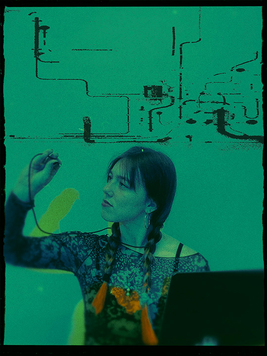
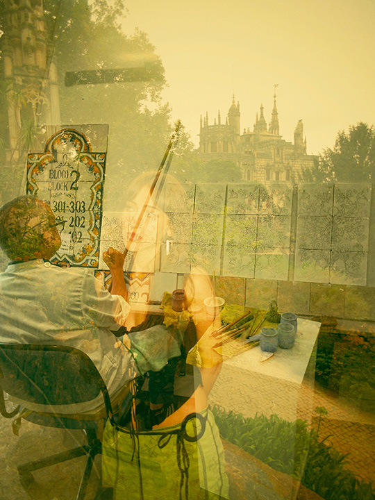
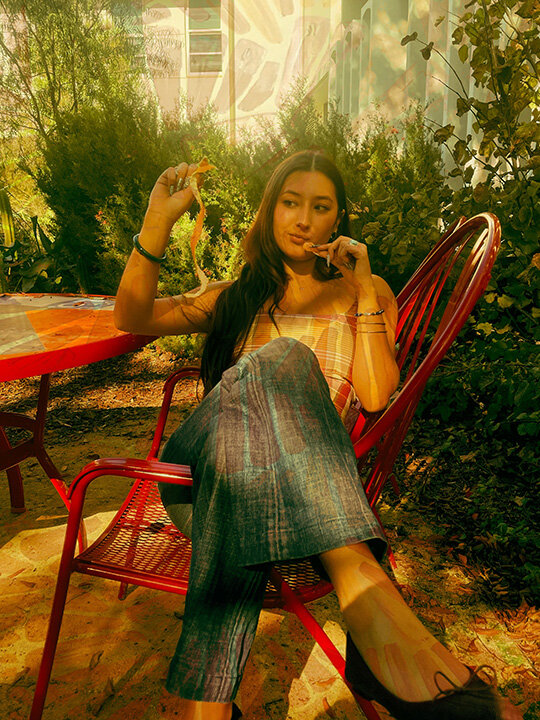
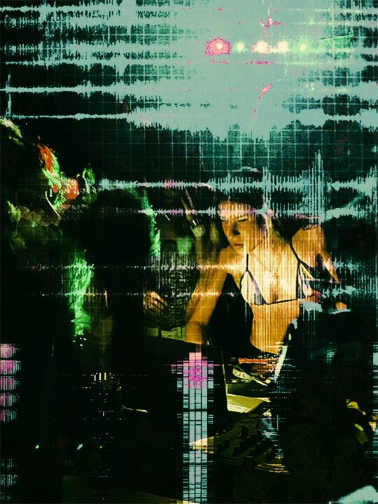
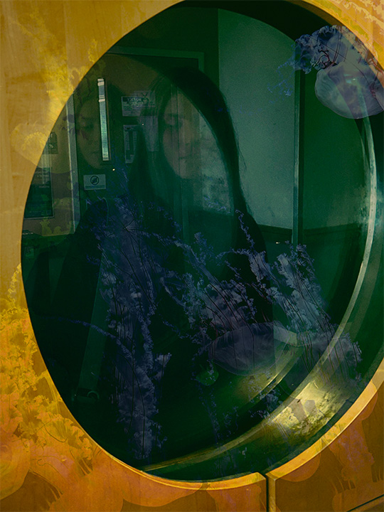
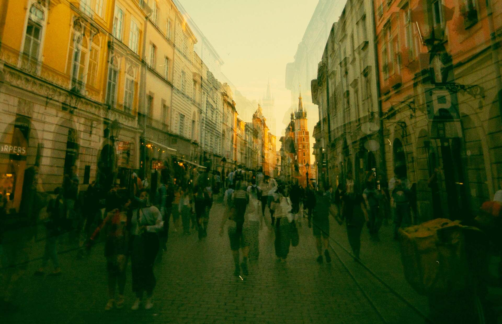

Yovi

likes
drawing on fogged-up glass
Everyone in the crowd has a life as vivid as yours.
Scroll to look a little closer.







Somewhere in someone else's crowd,
you're the blur walking past.
